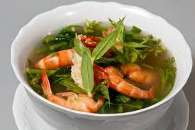

Canh chua rau muống tôm

- Khẩu phần 4
- Chuẩn bị 10 phút
- Thực hiện 15 phút
Nguyên liệu
- 300gr tôm thẻ
- 80gr rau muống
- 2 đầu hành
- 1/4 muỗng cà phê muối
- 1 muỗng canh dầu olive
- 1 gói Gia Vị Hoàn Chỉnh - Canh chua
Hướng dẫn thực hiện
- Cắt đầu hành thành miếng nhỏ
- Tôm thẻ rửa sạch, bỏ vỏ
- Để rau muống có màu tươi xanh, mẹ có thể trần sơ qua rồi cho vào nước đá
- Khi dầu vừa nóng, cho hành vào xào khoảng 10 giây
- Cho tôm vào xào sơ rồi vớt ra
- Cho nước lọc đun sôi rồi cho Gia Vị Hoàn Chỉnh - Canh Chua vào
- Cho tôm và rau muống vào và tắt lửa.